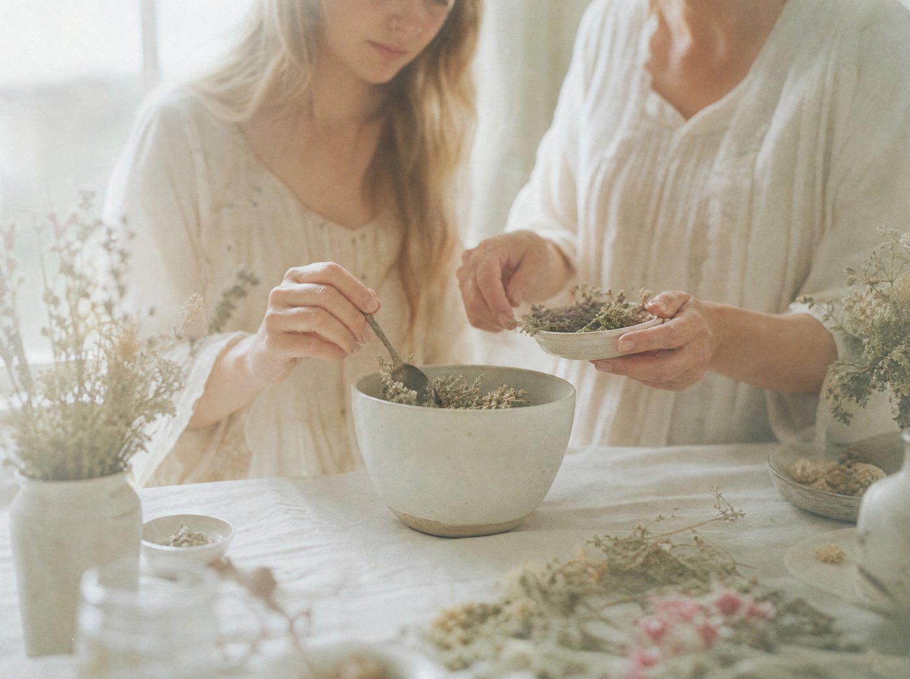
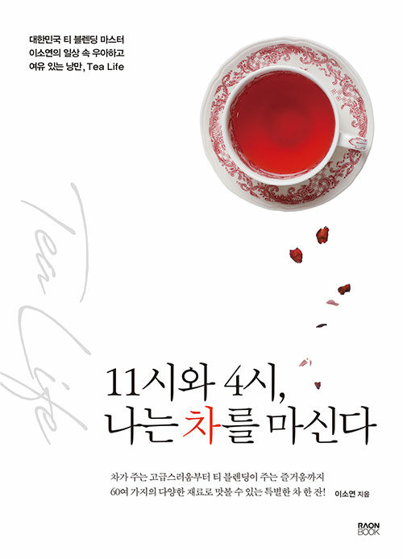
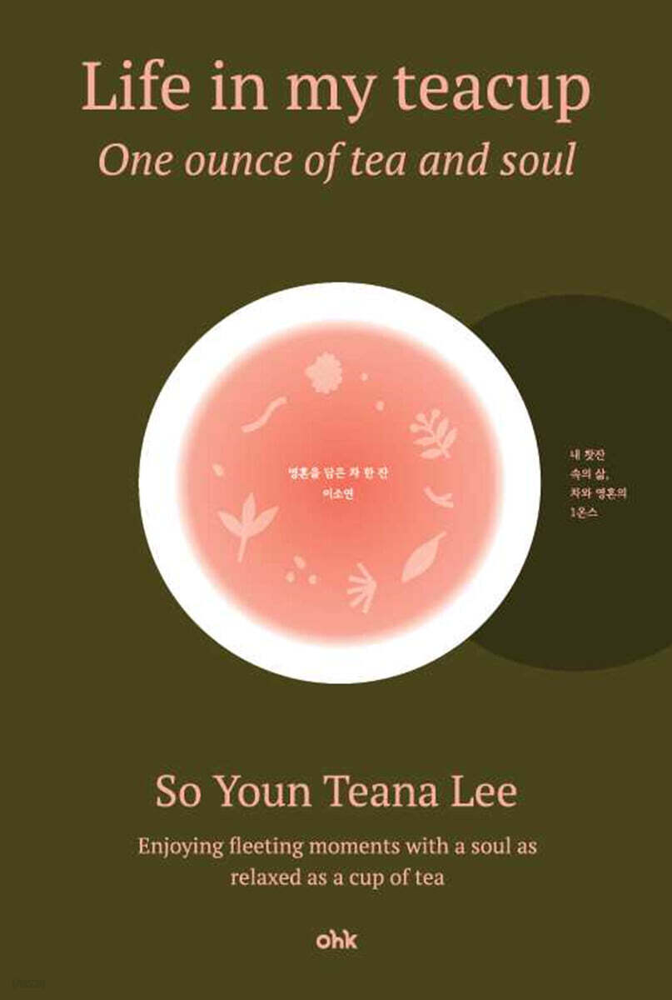
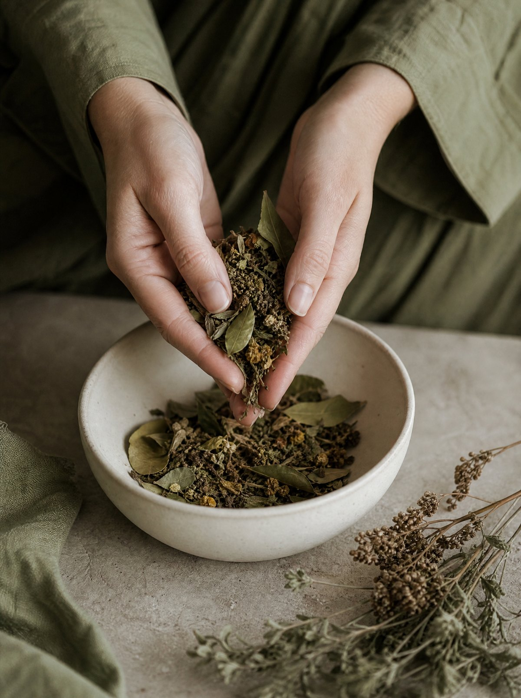
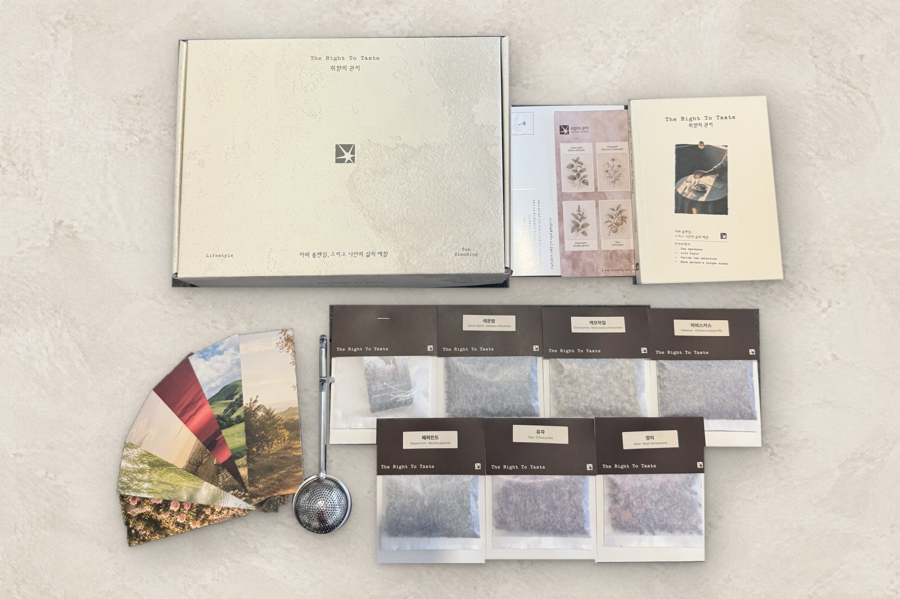

구매 안내Shop Information
와디즈 펀딩 중에는 와디즈에서, 종료 후에는 취향의권리.com에서 바로 구매할 수 있습니다. 마음에 든 원료만 낱개로 이어 갈 수도 있어요. 혼자 즐기는 시간에도, 함께 만들어 보는 시간에도, 좋아하는 사람에게 건네는 선물에도.
물건이 아니라,
하나의 경험을 건넵니다.
- ONLINE
- 취향의권리.com (펀딩 종료 후 상시 구매)
- FUNDING
- 와디즈 — 「취향의 권리」 첫 공개 · 울트라 얼리버드
- REWARDS
- 키트 1개(Taste 또는 Depth) · 2개 세트(키트 2 + 노트 2 + 인퓨저 2 + 단팥차 샘플)
- SHIPPING
- 모든 리워드 무료배송 · 제주·도서산간 추가 배송비 3,000원
- CONTACT
- 카카오 채널 · Instagram @right.totaste
선물용 포장, 단체 주문, 클래스 문의는 Contact로 남겨 주세요.

키트 세 가지 중 하나를 고르세요.
Taste + Depth
키트 2개 · 노트 2권 · 인퓨저 2개 · 단팥차 샘플
허브와 곡물을 섞는 교차 블렌드까지
가격·구성은 와디즈 리워드 기준이며 확정 전입니다. 주문 버튼은 펀딩 오픈과 함께 연결됩니다. 모든 리워드 무료배송 · 제주·도서산간 추가 배송비 3,000원.
만든 곳, 티아포테카
티아포테카(Tea Apotheca)는 차를 고르고, 섞고, 가르쳐 온 티 브랜드입니다. 「취향의 권리」는 티아포테카가 로스터와 함께 만든 첫 번째 블렌딩 키트입니다.

지금까지, 그리고 앞으로

『11시와 4시, 나는 차를 마신다』
차 블렌더 이소연의 첫 책(라온북). 하루 두 번, 차를 마시는 시간에 대한 기록에서 「취향의 권리」의 문장이 시작됐습니다.

『Life in My Teacup』
One ounce of tea and soul. 영문 에세이(OHK)로 차와 삶의 블렌딩을 바깥에 전했습니다.

블렌더와 로스터가 만나다
향으로 즐기는 허브 여섯과 깊이로 즐기는 곡물 여섯. 4,000가지 조합 중 스물한 가지를 시음으로 고르고, 고재의 결을 닮은 상자와 노트를 설계했습니다.

와디즈에서 처음 만나는 「취향의 권리」
VER.1 Taste · VER.2 Depth · 2개 세트. 펀딩 종료 후 취향의권리.com에서 상시 구매와 원료 낱개 판매로 이어집니다.
Outline
- 브랜드
- 취향의 권리 · The Right to Taste
- 만든 곳
- 티아포테카 (Tea Apotheca)
- 대표 · 블렌더
- 이소연 (대한명인 차블렌딩명인)
- 함께 만든 사람
- 양진호 (엘카페커피로스터스 대표 · 로스터)
- 하는 일
- 티 블렌딩 키트 · 원료 낱개 판매 · 블렌딩 클래스
- 문의
- 카카오 채널 · Instagram @right.totaste
Privacy Policy
이 사이트에서 수집하는 개인정보는 문의 응대와 주문 처리를 위한 최소한의 항목으로 한정하며, 목적 외에 쓰지 않습니다.
수집 목적과 항목
문의 응대(이름 · 이메일 · 문의 내용), 주문 처리(수령인 · 연락처 · 주소). 목적이 끝나면 지체 없이 파기합니다.
보관과 보호
유출 · 분실 · 무단 접근을 막기 위해 필요한 조치를 다하며, 관련 법령과 내부 규정에 따라 다룹니다.